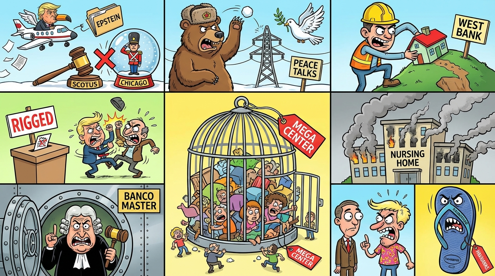

The Daily Globe: Epstein Files Release and Allegations Against High-Profile Figures, Supreme Court Blocks Trump's National Guard Deployment to Chicago, and Banco Master Scandal Involving STF Minister Alexandre de Moraes
Published on 2025-12-25

World
- Epstein Files Release and Allegations Against High-Profile Figures
U.S. Department of Justice released thousands of additional pages from Jeffrey Epstein's files, including unredacted claims about Donald Trump's frequent use of Epstein's private jet, reigniting debates over elite accountability and potential cover-ups.
- U.S. Supreme Court Blocks Trump's National Guard Deployment in Chicago
In a 6-3 decision, the Supreme Court ruled against the Trump administration's attempt to deploy National Guard troops to Chicago without state approval, sparking debates on federal authority and urban crime.
- Escalations in Ukraine-Russia Conflict and Peace Talks
Russian missile and drone strikes hit Ukrainian energy infrastructure amid stalled U.S.-Ukraine peace talks proposing demilitarized zones, fueling accusations of endless war.
- Israel's West Bank Settlement Expansion and Gaza Resettlement Plans
Israel announced 19 new settlements in the occupied West Bank and plans for outposts in Gaza, drawing global condemnation for exacerbating Palestinian displacement.
- Tanzania Election Violence and Rigged Results
President Samia Suluhu Hassan's re-election with 98% amid opposition bans and security forces killing protesters, called a sham by observers.
USA
- Supreme Court Blocks Trump's National Guard Deployment to Chicago
6-3 ruling halts federal deployment without state approval, intensifying partisan debates on crime and states' rights.
- New Epstein Files Release Involving Trump
DOJ releases more Epstein documents mentioning Trump, prompting calls for accountability amid conspiracy theories.
- Immigration Enforcement and ICE Mega Detention Centers
ICE plans to detain 80,000 immigrants in warehouses and sweeps in Somali communities raise fears of racial profiling.
- Nursing Home Explosion in Pennsylvania
Deadly blast at Bucks County nursing home kills two and injures over 20, highlighting elder care safety issues.
- Lawsuit Against HHS on Youth Gender-Affirming Care
Nineteen states sue HHS over proposed restrictions on gender-affirming care for minors.
Brazil
- Banco Master Scandal Involving STF Minister Alexandre de Moraes
Jornal Nacional exposes Moraes' multiple contacts with Banco Central head on Banco Master case, amid conflict of interest allegations.
- Calls for STF Impeachments Over Impartiality Breaches
Outrage over STF justices' personal ties influencing decisions, compared to Chile's judge impeachment.
- Havaianas Flip-Flop Commercial Backlash
Ad campaign sparks boycott calls and people throwing away products, accused of insensitivity.
- Lula's Christmas Pardons Amid Corruption Critiques
Presidential indulto for criminals while innocents restricted, tied to INSS fraud and government scandals.
Topic Index
- World: Epstein Files Release and Allegations Against High-Profile Figures — U
- World: U.S. Supreme Court Blocks Trump's National Guard Deployment in Chicago — In a 6-3 decision, the Supreme Court ruled against the Trump administration's attempt to deploy National Guard troops to Chicago without state approval, sparking debates on federal authority and urban crime
- World: Escalations in Ukraine-Russia Conflict and Peace Talks — Russian missile and drone strikes hit Ukrainian energy infrastructure amid stalled U
- World: Israel's West Bank Settlement Expansion and Gaza Resettlement Plans — Israel announced 19 new settlements in the occupied West Bank and plans for outposts in Gaza, drawing global condemnation for exacerbating Palestinian displacement
- World: Tanzania Election Violence and Rigged Results — President Samia Suluhu Hassan's re-election with 98% amid opposition bans and security forces killing protesters, called a sham by observers
- USA: Supreme Court Blocks Trump's National Guard Deployment to Chicago — 6-3 ruling halts federal deployment without state approval, intensifying partisan debates on crime and states' rights
- USA: New Epstein Files Release Involving Trump — DOJ releases more Epstein documents mentioning Trump, prompting calls for accountability amid conspiracy theories
- USA: Immigration Enforcement and ICE Mega Detention Centers — ICE plans to detain 80,000 immigrants in warehouses and sweeps in Somali communities raise fears of racial profiling